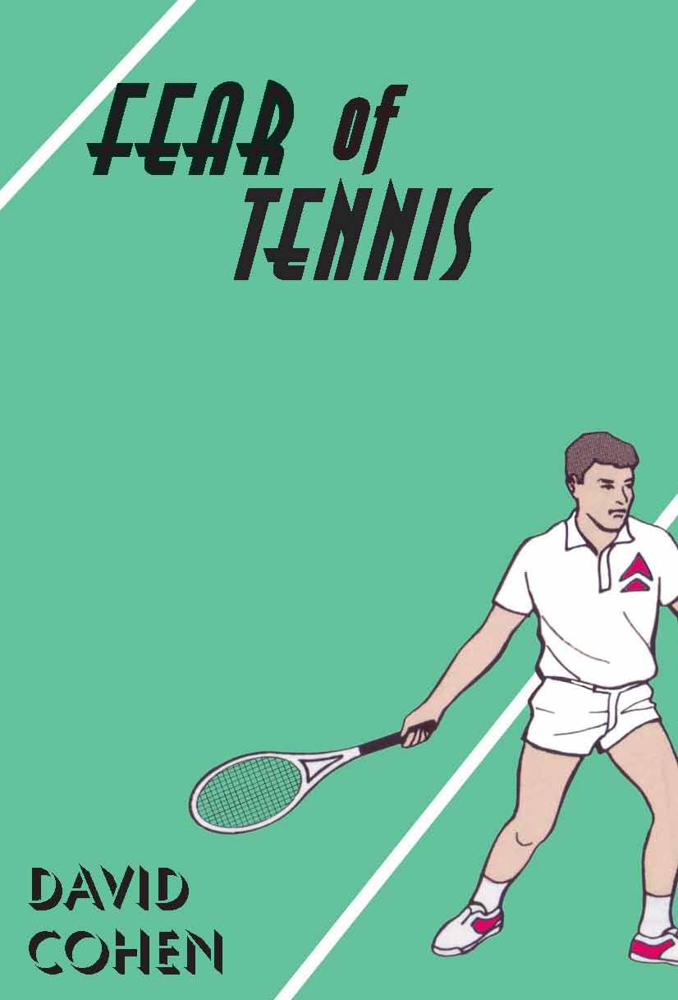

 Fear of TennisDavid Cohen It wouldn’t be a bad thing if Fear of Tennis became a cult book: like Seinfeld, it makes Fabergé mountains out of everyday molehills Owen Richardson, The Age Quirky and offbeat with a dry wit and an acute eye for some of the absurdities of contemporary urban life Roger Bourke, Westerly |
| Down to Book Description Contents Book Sample |
Down to Citations as a Book of the Year Launch Speech by Angela Pippos |
Cohen biography | Next title Previous title Home page All publications |
||
Cited as a Book of
the Year (2007) by Les Murray in the Times Literary Supplement
and The Age
and The West Australian
The
back of Jason Blunt’s head filled me with unease. I could
already
feel my chest muscles tightening. I could almost hear them tightening
– a creaking sound, like someone had inserted a key in my
back
and was slowly winding me up.
An
anxious sighting marks
the re-appearance of high-school friend Jason Bunt in Mike
Planner’s ordered life as a courtroom sound-recordist. Mike
is a
cool obsessive – an avid spectator of criminal trials and a
connoisseur of restrooms, both public and domestic. A
lighthouse-related disaster in Year Ten has left him with a debt to
Jason. Jason has meanwhile taken up tennis with evangelical zeal, and
Mike seizes on this in an ill-advised attempt to wipe the slate clean.
Further complications arise when Mike’s Bible-reading
co-worker
Fiona introduces him to the Old Testament, and he grapples with
questions of guilt, redemption, the Patriarch Abraham, and former
Wimbledon champion Pete Sampras.
Fear of Tennis – a novel about the impossibility of avoiding sport.
Fear of Tennis – a novel about the impossibility of avoiding sport.
ISBN 9781876044558
Published 2007
214 pgs
Fear of Tennis book sample
Back to top
21 Chapters
Back to top
Reviews
The Year's Work in Fiction 2007-2008: Fear of Tennis
Roger Bourke
Westerly, Vol. 53, 2008, pg. 54
Fear of Tennis by David Cohen, a Perth-born writer, mainly of short stories, now living in Melbourne, was another standout Australian first novel of 2007-08. It is not often one comes across a comic debut novel - certainly not such an accomplished one. ‘It wouldn’t be a bad thing if Fear of Tennis became a cult-book: like Seinfeld, it makes Fabergé mountains out of everyday molehills,’ the reviewer Owen Richardson wrote of it in the Melbourne Age. While not quite, like Seinfeld, ‘about nothing,’ Cohen’s novel is indeed quirky and offbeat with a dry wit and an acute eye for some of the absurdities of contemporary urban life. Its hero, Mike Planner, is a nerdy, obsessive-compulsive type who works as a courtroom sound-recordist in present-day Perth. He is also a man who has a fixation with hygiene and bathrooms, public and private: ‘The sight of a well-designed, well-maintained public toilet always fills me with pleasure.’ But Mike’s closeted existence is changed in unexpected ways after he happens to see his best mate from school, now a yuppie banker and tennis addict, on a bus. The plot resolves itself in the age-old comic tradition of a satisfying, ‘feel-good’ ending with all loose ends tied. I thoroughly enjoyed this novel: for its intelligence, its understated humour, its engaging central character, and, not least, its sure grasp of the conventions of the difficult craft of comic writing. Once again, this author is a new writing talent worth watching.
Back to top
Fear of Tennis
Ben Peek
Overland, No. 191, Winter 2008, pg. 86
A dry-humoured novel featuring the obsessive-compulsive Mike Planner who works as a courtroom sound-recorder and practises his smiles in the toilet mirror. The novel begins when Planner sees an old school friend, Jason Blunt, on a bus and feels that he owes him for an incident in their childhood where the latter took the blame for something that the former did (how’s that for avoiding spoilers?). Unaware of this, Blunt, caught in his own obsession with tennis, invites Planner to join him and his coach Gary, an ex-pro player who never plays but who instead takes photos of Blunt playing.
I found Fear of Tennis a little strained by end of two hundred pages, as Planner’s obsessive-compulsive nature, in combination with tennis itself, was not exactly to my taste. I would have liked a little more time devoted to Fiona, the student of religion on whom Planner develops a crush after she steals his cup - but I suspect I would have gone for anything that would have taken.me away from the tennis. Regardless, Cohen’s writing is tight, detailed and the dialogue rarely skips a beat.
Back to top
Parody: Fear of Tennis
Louise Swinn
Australian Book Review, No. 299, March 2008
Fear of Tennis is David Cohen’s quirky and absurd first novel. It features the obsessive Mike Planner, whose interests include court reporting and bathrooms. When he bumps into Jason Bunt, his best friend from high school, Mike recalls how they fell out.
At the centre of the story is a bizarre struggle towards redemption; Mike wants to atone for a past sin and believes that Jason’s series of ‘challenges’ are a way to do just that. So, somewhat perplexingly, Mike, who has never been interested in sport, begins to swim and play tennis, frequenting the gym with increasing regularity.
Mike is not the only one whose obsessions litter Fear of Tennis. Jason, who holds his racquet even when he is at rest, spends evenings watching videos of his tennis practice. Halfway through, the book picks up pace. We meet Gary, Jason’s tennis coach, who tries to avert Jason’s tantrums with such aphorisms as ‘never surrender to the chemistry of anger’. While maintaining this rekindled friendship with Jason, and constantly training, Mike is holding down his job, and trying to find ways to woo a female colleague, who is studying the Old Testament.
The humour derives from Mike’s assumptions and from his inability to communicate them to people. The situation is interesting enough, highlighting as it does the possible lengths that people can go to for redemption; but the prose, monotonous to reflect the orderliness of Mike’s life, makes this a dull read. The book needed a good edit and proofreading; this would not be worth mentioning if its absence wasn’t so distracting. By far the best thing about the novel is Gary; he is the caricature of the sports-crazed, adrenalin-fuelled trainer who quotes from the Tao Te Ching and, like Jason, doesn’t see humour in anything.
Back to top
Parody: Fear of Tennis
Owen Richardson
The Age, 29 September 2007
Perth-born, Melbourne-based David Cohen’s first novel is a minimalist parody of dramas of guilt and atonement. Mike and Jason are high-school best-friends; one day Jas takes the rap for an act of foolishness on Mike’s part involving a toy light-house. After Jason is expelled they have little to do with each other until in adult life they run into each other on the bus: Mike is a perfectionist court reporter and Jason a corporate thug.
It’s the comedy of syndromes: Mike is as obsessed with the cleanliness and mod cons of public toilets as Jason is with tennis, while Mike’s workmate Fiona, whom he is trying to date, is heavily into the Pentateuch (first five books of the Bible) - she fills Mike in on the trials of Abraham, a useful myth for his particular circumstance. Mike operates by second-guessing and mind-reading, and the plot and the incidental humour get mileage out of Mike’s inability to deal with anyone directly.
The recessive absurdism has its appeal, and it wouldn’t be a bad thing if Fear of Tennis became a cult book: like Seinfeld, it makes Fabergé mountains out of everyday molehills. At the same time, the deliberate flatness of the writing threatens to make the whole thing too dry - Mike’s is the voice of pedantry and so is Cohen’s - at least until the accumulating ridiculousness and the elegance of the construction draw you forward.
Back to top
West Australian writer David
Cohen offered a sprightly, original novel titled Fear of
Tennis
(Black Pepper), in which a mild-mannered courtroom sound recordist and
sports-hater gets enmeshed in high-tech athleticism as an act of
atonement for a wrong he committed a dozen years before.
Les Murray, The Age, 8 December
2007
and The West Australian
and The West Australian
David Cohen’s Fear
of Tennis
(Melbourne, Black Pepper) stood out among the novels I read. A
sports-hating courtroom recordist enmeshes himself in high-tech
athleticism to atone for an old wrong, and the rabbinical underpinnings
of the original tale are discreetly conveyed.
Les Murray, the Times Literary Supplement, 1
December 2007
Back to top
Angela Pippos
(sporting commentator)
3 September 2007, Readings Books & Music Carlton
It’s my pleasure to be here tonight... I gave Kevin the runaround because he called me just as I was in the middle of my delicate negotiations with the ALP over the seat of Williamstown. So Kevin apologies for my evasive, strange behavior... with that sort of evasiveness perhaps I would have made a good politician.
~
But that’s all water under the bridge... I’m here and very comfortable with my decision to continue forging my own literary career... At least I can continue sleeping at night.
Fear of Tennis took me away from the circus that was my life a few weeks ago. Sport and humour... what a wonderful combination. There should be more of it. I combined the two in my book The Goddess Advantage and David has done the same here... very successfully.
There is so much humour in the way we as a nation embrace sport. I’ll stick my hand up here and say I lose sleep over my footy team. I spend most of my waking (and sleeping) life worrying about the forward set up at the Adelaide Crows... but I grew up with this obsession... the two protagonists in Fear of Tennis didn’t. In fact, they loathed swimming so much they developed a cunning plan to avoid their swimming class week in, week out.
And at one point Jason Bunt declares: ‘only the true dickheads of this world play tennis.’
Well he becomes one of them... and his old school friend, Mike Planner, gets involved in sport for other reasons... but I won’t give too much away.
As the back cover says this is a novel about the impossibility of avoiding sport.
~
By page four I’d developed a minor crush on the main character; Mike Planner who we learn had only five ties… for the five days of the week…
‘I wore them in the same sequence, week in, week out. If by chance I forgot which day it was, I could always check my tie.’
I grew more enamoured with him when he told us he went through 3,960 two-ply tissues in a year, 2,250 cups of coffee and he was up to case number 877 as a court reporter... one of the best at Precision Court Reporters.
There’s something very alluring about a man who shows that sort of attention to detail... well, as someone who carries around a whole lot of useless information in my head... I think so anyway.
Mike also has a fixation with restrooms where he performs his smile and chest-tapping routine to relax... which I’ve since tried myself.
So you get the picture... he’s a lovable, nerdy sort of guy.
At the heart of Fear of Tennis is Mike’s relationship with his best friend from high school, Jason Bunt. They lose touch after a lighthouse-related disaster in year ten and meet up again eleven years later.
And, as I mentioned before, Jason has changed... he’s become a sports lover.
And we all know what they’re like... I went out with a man when I first came to Melbourne who said he wanted to charge ten dollars for people to come over and watch me watching the footy. We’re a zealous bunch.
There’s a bit of Jason Bunt in every sports lover... perhaps minus the history of assault, motivational books and IKEA furniture.
There are so many comical references to sport in this book which had me laughing aloud in bed.
When Mike and Jason meet up as adults for the first time to have a coffee... Jason turns up holding his tennis racquet…because there’s a connection between how you carry your racquet and how you carry yourself mentally during a match... so Jason practiced holding his racquet at every opportunity.
~
And talking about his coach, Gary, he says to Mike...
‘For the first two weeks, we didn’t even get onto the court. All we did was visualise the shots I want to play. He wants me to program every shot into my muscle memory – that’s what he calls it – so we just visualised the shots.’
The coach, Gary had so many Gary-isms. Here’s just a taste of his wisdom –
‘I can’t stress to you enough that the physical racquet is an outward manifestation of the mental racquet.’
‘You must become the shot.’
‘Fill your bowl to the brim and it will spill. Keep sharpening your knife and it will blunt.’
And he’s always telling Jason to ‘Release, review and re-set’... as a way of overcoming his anger issues.
Gary is totally out of control... the endearing qualities of Mike are more than offset by Gary’s duplicity.
The reader is with Mike every step of the way... barracking louder and louder as his journey unfolds, despite our main character’s delusional tendencies. There are tasty parallels to the story of Abraham in the bible and there’s a hint of romance, which I’m always searching for (in books and life).
Congratulations on your first book David. Like me, I see you’re writing your second novel (I trust it’s progressing faster than mine)…
Ladies and gentlemen please join me in a toast... to David Cohen and Fear of Tennis.
Back to top
Cohen biography
www.blackpepperpublishing.com